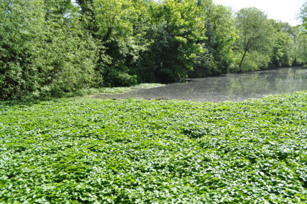

USES OF WEEDS

-
Weeds can add nutrients to the soil when they break down.
-
Weeds' roots help keep soil in place and stop it from washing away.
-
Weeds provide food and shelter for insects, birds, and other animals.
-
Some weeds can be used as natural medicine to treat health problems.
-
Weeds offer nectar and pollen for bees and butterflies.
-
Weeds can be composted to create rich soil for gardening.
-
Weeds can show if the soil is too acidic or lacks nutrients.
-
Cut weeds can be spread on the ground to keep soil moist and stop more weeds from growing.
-
Weeds can be mixed into the soil to make it more fertile.
-
Some weeds can be eaten by livestock, providing them with extra food.